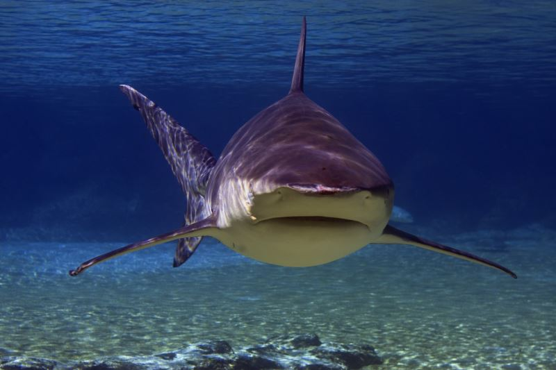

Köpek balığı (Selachimorpha), denizlerin en eski ve en güçlü yırtıcılarından biridir. Yaklaşık 400 milyon yıldır varlığını sürdüren bu canlılar, doğada ekosistemin dengesi için kritik bir rol oynar. Vücut yapıları kıkırdaklı iskelet üzerine kuruludur ve bu özellikleriyle kemikli balıklardan ayrılırlar. Ortalama birkaç metreden 12–15 metreye kadar ulaşabilen türleri vardır; en bilinenleri arasında beyaz köpek balığı, çekiç başlı köpek balığı ve kaplan köpek balığı bulunur. Keskin dişleri ve güçlü çeneleri sayesinde avlarını kolayca yakalayabilirler. Etçil beslenme yapısına sahip olan köpek balıkları, genellikle balıklar, deniz memelileri ve kabuklularla beslenir. Su sıcaklığına ve tuzluluğa göre farklı türleri dünyanın pek çok denizinde yaşayabilir. Üreme biçimleri türden türe değişir; bazıları yumurta bırakırken bazıları canlı doğum yapar. Köpek balıkları, doğadaki av–avcı dengesini koruyarak deniz ekosisteminin sağlıklı kalmasına katkı sağlar. Güçlü yapıları, keskin duyuları ve milyonlarca yıllık evrimsel geçmişleriyle köpek balıkları, deniz canlıları arasında en dikkat çekici türlerden biridir.